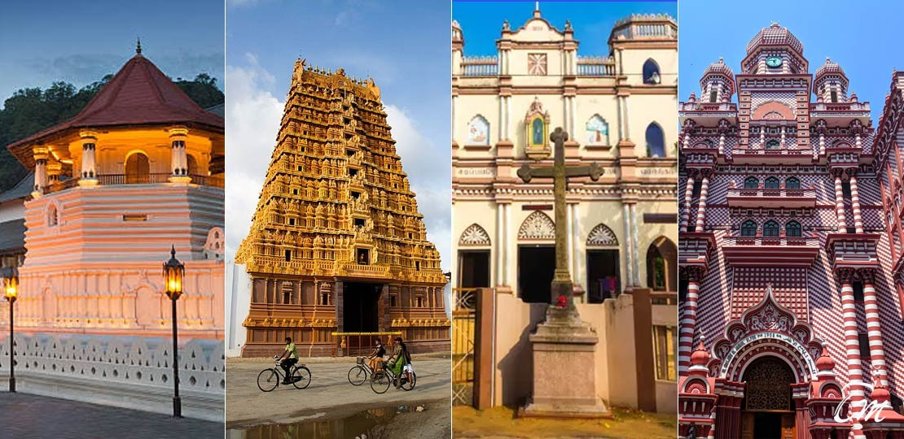

Sri Lankan culture if often reflected by the use of art,festivals, heritage, and even food.
Some people would say that Sri Lanka has a more conventional culture which is obviously influenced by the prominent religions prevailing the country such as Buddhism, Hinduism, Islam, etc.
